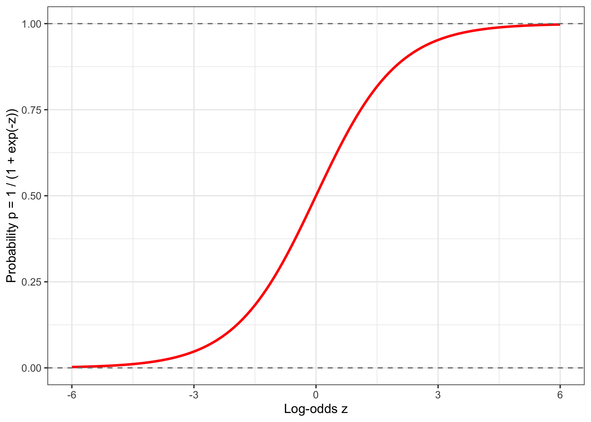
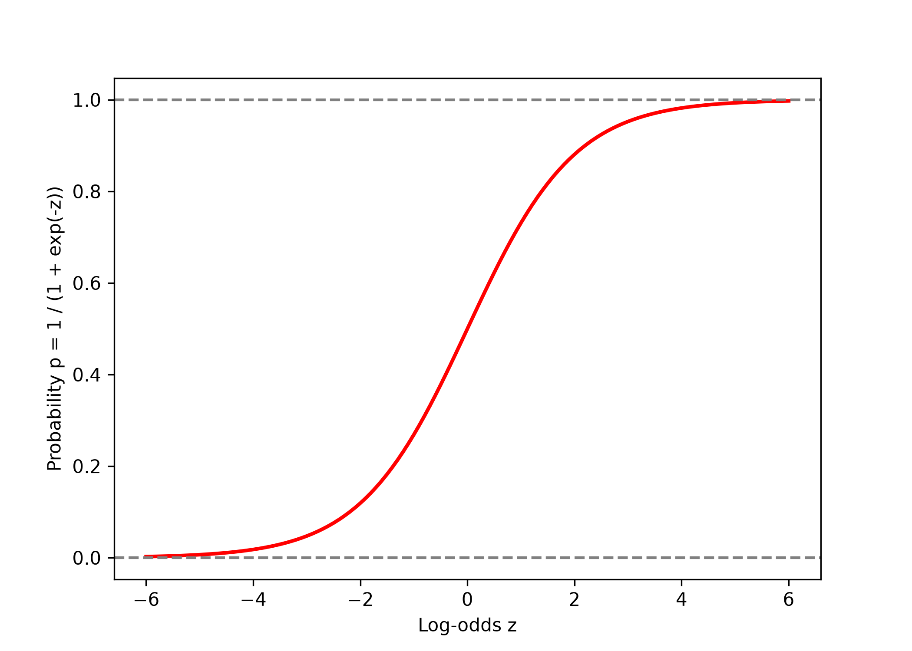

# Packages for this exercise. If one is missing, remove the # and run this line once:
# install.packages(c("tidyverse", "tidymodels"))
library(tidyverse)
library(tidymodels)
theme_set(theme_bw()) # white background for every plot
options(pillar.sigfig = 4) # show four significant figures in tablesExercise 4.2 — Probability, odds and log-odds
In Exercise 4.1, predict() gave each person a probability of an event. This exercise shows where it comes from. A probability must stay between 0 and 1, and a straight line does not. Logistic regression fits the straight line on a different scale, the log-odds, and converts back.
Theory: probability, odds and log-odds; the logistic (sigmoid) function; reading a logistic regression coefficient; from a fitted model to a probability.
NoteThe plots are for looking at
The code for every plot is folded away just above it, in case you are curious, and all of it is in the notebook linked at the top of each tab. You are not expected to write it yourself.
Download this exercise as an R Markdown notebook (.Rmd): the text and every code cell of the R version, including the code for the plots, with the blanks left for you to fill in. Open it in RStudio and run it a chunk at a time.
Packages and data
The same 750 people and the same split as Exercise 4.1: every fifth person is held back as the test set.
cvd <- read_csv("data/cvd_risk.csv") |>
mutate(cvd = factor(cvd, levels = c("no", "yes")))
test_rows <- seq(1, nrow(cvd), by = 5) # every fifth person is held back
train <- cvd[-test_rows, ]
test <- cvd[test_rows, ]Part 1 — Probability, odds and log-odds
Before fitting any model we need to be clear about how three ways of describing the same chance are related:
- Probability \(p\): the chance of the event happening, between 0 and 1.
- Odds: the probability of the event divided by the probability of no event, \[\text{odds} = \frac{p}{1-p}\] between 0 and infinity.
- Log-odds, also called the logit: the natural log of the odds, \[\text{logit}(p) = \log\left(\frac{p}{1-p}\right)\] which can be any number, negative or positive.
Start from a probability of 0.8:
prob <- 0.8
odds <- prob / (1 - prob)
log_odds <- log(odds)
c(probability = prob, odds = odds, log_odds = log_odds)#> probability odds log_odds
#> 0.800000 4.000000 1.386294A probability of 0.8 means odds of 4 (“four to one”), and log-odds of 1.386.
Complete this table on paper, using a calculator for the logs. The first row is done for you.
| Probability \(p\) | Odds \(p/(1-p)\) | Log-odds \(\log(\text{odds})\) |
|---|---|---|
| 0.8 | 4 | 1.386 |
| 0.5 | ||
| 0.2 | ||
| 0.9 |
Then check it in code:
# Replace every ______ below, then run this cell.
data.frame(prob = c(0.8, 0.5, 0.2, 0.9)) |>
mutate(odds = ______,
log_odds = log(odds))Going back the other way, from log-odds \(z\) to probability, is the logistic (or sigmoid) function:
\[p = \frac{1}{1 + e^{-z}}\]
It takes any number and squeezes it into the range 0 to 1:
Code for this plot (optional)
data.frame(log_odds = seq(-6, 6, by = 0.1)) |>
mutate(probability = 1 / (1 + exp(-log_odds))) |>
ggplot(aes(x = log_odds, y = probability)) +
geom_line(colour = "red", linewidth = 1) +
geom_hline(yintercept = c(0, 1), linetype = "dashed", colour = "grey50") +
labs(x = "Log-odds z", y = "Probability p = 1 / (1 + exp(-z))")
ImportantLearning points
- Probability lies between 0 and 1, odds between 0 and infinity, log-odds anywhere.
- A probability of 0.5 is odds of 1 and log-odds of 0.
- Logistic regression is a straight line on the log-odds scale; the sigmoid turns it back into a probability.
Part 2 — The model on the log-odds scale
Fit the model from Exercise 4.1, Part 1: an event from age only. The outcome’s levels are no then yes, and glm predicts the probability of the second level, so the model is about yes.
logistic_spec <- logistic_reg(mode = "classification") |>
set_engine("glm")
logistic_fit_age <- logistic_spec |>
fit(cvd ~ age, data = train)
tidy(logistic_fit_age)#> # A tibble: 2 × 5
#> term estimate std.error statistic p.value
#> <chr> <dbl> <dbl> <dbl> <dbl>
#> 1 (Intercept) -5.638 0.6882 -8.193 2.548e-16
#> 2 age 0.08322 0.01097 7.585 3.324e-14This corresponds to the model
\[\text{logit}\big(P(\text{event} = \text{yes} \mid \text{age})\big) = \beta_0 + \beta_1 \times \text{age}\]
and with the fitted coefficients
\[\text{log-odds of an event} = -5.638 + 0.0832 \times \text{age}\]
To get the probability for a given age, apply the sigmoid:
\[\hat{p} = \frac{1}{1 + \exp\big(-(\beta_0 + \beta_1 \times \text{age})\big)}\]
Reading the slope. Each extra year of age adds 0.0832 to the log-odds of an event. Log-odds are hard to picture, so turn it into odds: adding 0.0832 to the log-odds multiplies the odds by \(e^{0.0832} = 1.087\). Ten extra years multiply the odds by \(e^{10 \times 0.0832} = 2.30\): they more than double. This number, \(e^{\beta_1}\), is the odds ratio.
ImportantLearning points
- Logistic regression is linear in the log-odds: \(\text{log-odds} = \beta_0 + \beta_1 x\).
- The slope is the change in log-odds for one unit of the predictor; \(e^{\beta_1}\) is the odds ratio.
- In R the model is about the second level of the outcome factor. Check the levels before you read the signs.
Part 3 — From the model to odds and probability
What does the model say about a 50-year-old? By hand first, using the rounded coefficients:
- log-odds: \(-5.638 + 0.0832 \times 50 = -1.478\)
- odds: \(e^{-1.478} = 0.228\)
- probability: \(\dfrac{0.228}{1 + 0.228} = 0.186\)
Now in code, with the coefficients unrounded:
b <- logistic_fit_age$fit$coefficients # intercept first, then the slope
age_value <- 50
log_odds_50 <- b[1] + b[2] * age_value # the straight line
odds_50 <- exp(log_odds_50) # odds
prob_50 <- 1 / (1 + exp(-log_odds_50)) # probability
round(c(log_odds = unname(log_odds_50), odds = unname(odds_50),
probability = unname(prob_50)), 3)#> log_odds odds probability
#> -1.477 0.228 0.186This is the same as asking the model, with predict():
predict(logistic_fit_age, new_data = data.frame(age = 50), type = "prob")#> # A tibble: 1 × 2
#> .pred_no .pred_yes
#> <dbl> <dbl>
#> 1 0.8141 0.1859A 50-year-old has a predicted probability of an event of 0.186: odds of 0.23, or roughly one to four.
Your turn. Do the same for a 70-year-old: first by hand, then by changing the code.
# Replace every ______ below, then run this cell.
age_value <- ______
log_odds_70 <- b[1] + b[2] * age_value
odds_70 <- exp(log_odds_70)
prob_70 <- 1 / (1 + exp(-______))
round(c(log_odds = unname(log_odds_70), odds = unname(odds_70),
probability = unname(prob_70)), 3)This is the 70-year-old from Exercise 4.1. The log-odds, 0.19, are just above 0, so the odds are just above 1 and the probability just above 0.5 (0.547). That is why the model only just said yes.
ImportantLearning points
- From the fitted line to a probability: compute the log-odds, exponentiate to get the odds, then \(p = \text{odds} / (1 + \text{odds})\).
predict(type = "prob")and.predict_proba()do exactly this calculation for you.- A log-odds of 0 is a probability of 0.5: that is where the predicted class changes, which Exercise 4.4 builds on.
Download this exercise as a Jupyter notebook (.ipynb): the text and every code cell of the Python version, including the code for the plots, with the blanks left for you to fill in. Open it in Jupyter or VS Code and run it a cell at a time.
Packages and data
# Packages for this exercise. If one is missing, install it once from a terminal
# (in a Jupyter notebook, type %pip instead of pip):
# pip install pandas numpy matplotlib scikit-learn
import pandas as pd
import numpy as np
import matplotlib.pyplot as plt
from sklearn.linear_model import LogisticRegressionThe same 750 people and the same split as Exercise 4.1: every fifth person is held back as the test set.
cvd = pd.read_csv("data/cvd_risk.csv")
cvd["cvd"] = (cvd["cvd"] == "yes").astype(int) # 1 = yes, 0 = no
is_test = cvd.index % 5 == 0 # every fifth person is held back
train = cvd[~is_test]
test = cvd[is_test]Part 1 — Probability, odds and log-odds
Before fitting any model we need to be clear about how three ways of describing the same chance are related:
- Probability \(p\): the chance of the event happening, between 0 and 1.
- Odds: the probability of the event divided by the probability of no event, \[\text{odds} = \frac{p}{1-p}\] between 0 and infinity.
- Log-odds, also called the logit: the natural log of the odds, \[\text{logit}(p) = \log\left(\frac{p}{1-p}\right)\] which can be any number, negative or positive.
Start from a probability of 0.8:
prob = 0.8
odds = prob / (1 - prob)
log_odds = np.log(odds)
print("probability:", prob)#> probability: 0.8print("odds: ", round(odds, 3))#> odds: 4.0print("log-odds: ", round(log_odds, 3))#> log-odds: 1.386A probability of 0.8 means odds of 4 (“four to one”), and log-odds of 1.386.
Complete this table on paper, using a calculator for the logs. The first row is done for you.
| Probability \(p\) | Odds \(p/(1-p)\) | Log-odds \(\log(\text{odds})\) |
|---|---|---|
| 0.8 | 4 | 1.386 |
| 0.5 | ||
| 0.2 | ||
| 0.9 |
Then check it in code:
# Replace every ______ below, then run this cell.
table = pd.DataFrame({"prob": [0.8, 0.5, 0.2, 0.9]})
table["odds"] = ______
table["log_odds"] = np.log(table["odds"])
table.round(3)Going back the other way, from log-odds \(z\) to probability, is the logistic (or sigmoid) function:
\[p = \frac{1}{1 + e^{-z}}\]
It takes any number and squeezes it into the range 0 to 1:
Code for this plot (optional)
log_odds = np.linspace(-6, 6, 121)
probability = 1 / (1 + np.exp(-log_odds))
fig, ax = plt.subplots()
ax.plot(log_odds, probability, color="red", linewidth=2)
ax.axhline(0, color="grey", linestyle="--")
ax.axhline(1, color="grey", linestyle="--")
ax.set_xlabel("Log-odds z")
ax.set_ylabel("Probability p = 1 / (1 + exp(-z))")
plt.show()
ImportantLearning points
- Probability lies between 0 and 1, odds between 0 and infinity, log-odds anywhere.
- A probability of 0.5 is odds of 1 and log-odds of 0.
- Logistic regression is a straight line on the log-odds scale; the sigmoid turns it back into a probability.
Part 2 — The model on the log-odds scale
Fit the model from Exercise 4.1, Part 1: an event from age only. The model predicts the probability of 1 (an event). C=np.inf switches off scikit-learn’s default penalty, so the coefficients match R’s.
logistic_fit_age = LogisticRegression(C=np.inf)
logistic_fit_age = logistic_fit_age.fit(train[["age"]], train["cvd"])
intercept = logistic_fit_age.intercept_[0]
slope = logistic_fit_age.coef_[0, 0]
print("intercept:", round(intercept, 4))#> intercept: -5.638print("slope: ", round(slope, 4))#> slope: 0.0832This corresponds to the model
\[\text{logit}\big(P(\text{event} = \text{yes} \mid \text{age})\big) = \beta_0 + \beta_1 \times \text{age}\]
and with the fitted coefficients
\[\text{log-odds of an event} = -5.638 + 0.0832 \times \text{age}\]
To get the probability for a given age, apply the sigmoid:
\[\hat{p} = \frac{1}{1 + \exp\big(-(\beta_0 + \beta_1 \times \text{age})\big)}\]
Reading the slope. Each extra year of age adds 0.0832 to the log-odds of an event. Log-odds are hard to picture, so turn it into odds: adding 0.0832 to the log-odds multiplies the odds by \(e^{0.0832} = 1.087\). Ten extra years multiply the odds by \(e^{10 \times 0.0832} = 2.30\): they more than double. This number, \(e^{\beta_1}\), is the odds ratio.
ImportantLearning points
- Logistic regression is linear in the log-odds: \(\text{log-odds} = \beta_0 + \beta_1 x\).
- The slope is the change in log-odds for one unit of the predictor; \(e^{\beta_1}\) is the odds ratio.
- In R the model is about the second level of the outcome factor. Check the levels before you read the signs.
Part 3 — From the model to odds and probability
What does the model say about a 50-year-old? By hand first, using the rounded coefficients:
- log-odds: \(-5.638 + 0.0832 \times 50 = -1.478\)
- odds: \(e^{-1.478} = 0.228\)
- probability: \(\dfrac{0.228}{1 + 0.228} = 0.186\)
Now in code, with the coefficients unrounded:
age_value = 50
log_odds_50 = intercept + slope * age_value # the straight line
odds_50 = np.exp(log_odds_50) # odds
prob_50 = 1 / (1 + np.exp(-log_odds_50)) # probability
print("log-odds: ", round(log_odds_50, 3))#> log-odds: -1.477print("odds: ", round(odds_50, 3))#> odds: 0.228print("probability:", round(prob_50, 3))#> probability: 0.186This is the same as asking the model, with .predict_proba():
logistic_fit_age.predict_proba(pd.DataFrame({"age": [50]}))#> array([[0.81413082, 0.18586918]])A 50-year-old has a predicted probability of an event of 0.186: odds of 0.23, or roughly one to four. The first column is the probability of 0 (no event), the second the probability of 1.
Your turn. Do the same for a 70-year-old: first by hand, then by changing the code.
# Replace every ______ below, then run this cell.
age_value = ______
log_odds_70 = intercept + slope * age_value
odds_70 = np.exp(log_odds_70)
prob_70 = 1 / (1 + np.exp(-______))
print("log-odds: ", round(log_odds_70, 3))
print("odds: ", round(odds_70, 3))
print("probability:", round(prob_70, 3))This is the 70-year-old from Exercise 4.1. The log-odds, 0.19, are just above 0, so the odds are just above 1 and the probability just above 0.5 (0.547). That is why the model only just said yes.
ImportantLearning points
- From the fitted line to a probability: compute the log-odds, exponentiate to get the odds, then \(p = \text{odds} / (1 + \text{odds})\).
predict(type = "prob")and.predict_proba()do exactly this calculation for you.- A log-odds of 0 is a probability of 0.5: that is where the predicted class changes, which Exercise 4.4 builds on.
Stretch
NoteStretch — add blood pressure
Fit cvd ~ age + systolic_bp on the same training rows. Does the coefficient for age change? What does it now mean, in words?